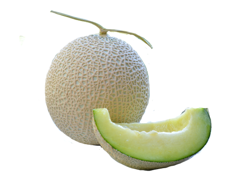

茨城県にあるメロンを栽培している宮本農園です。皆さんにおいしくて美しいメロンを栽培することに尽力しております。
たくさんの笑顔を見ることを楽しみに
日々努力を重ねていますので美味しいメロンを味わって欲しいです！
様々なバリエーションの商品を用意し、いろいろな形でメロンを楽しんでいただきたいと
思っています。
都心から近いので気軽にメロン狩りをしていただけます！！メロンを大切に育てながら皆さんをお待ちしております。

キングメロン
10年研究して生まれた糖度の高いメロンです。贈り物にもピッタリです。 一つ一つ丁寧に栽培しておりますので安心してお召し上がりいただけます。 様々な方法でお召しいただけるメロンとなっていますので、たくさんのレシピでお楽しみいただきたいです！